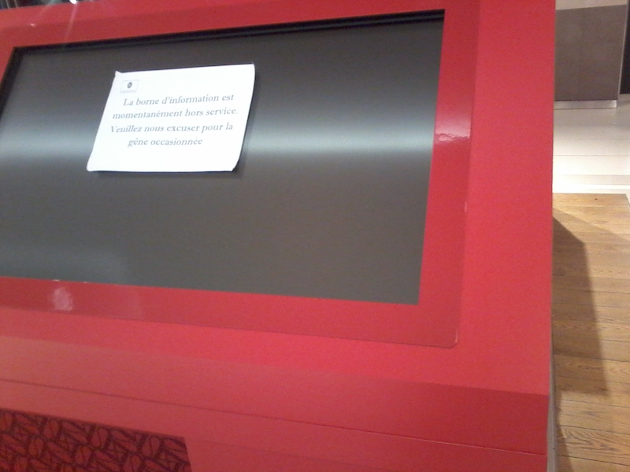
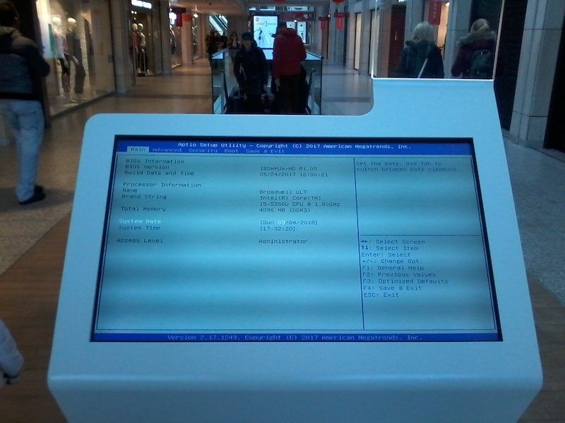
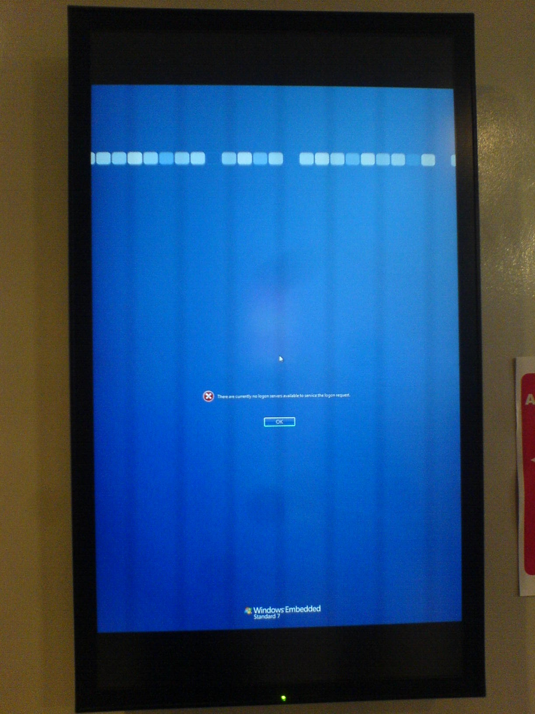
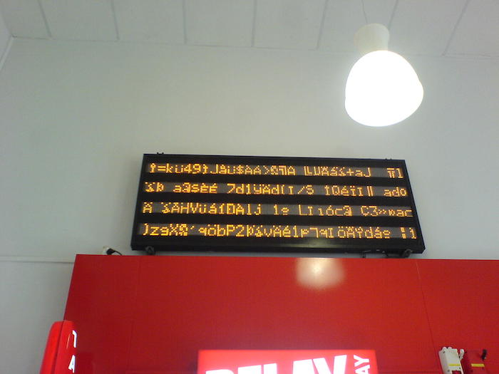
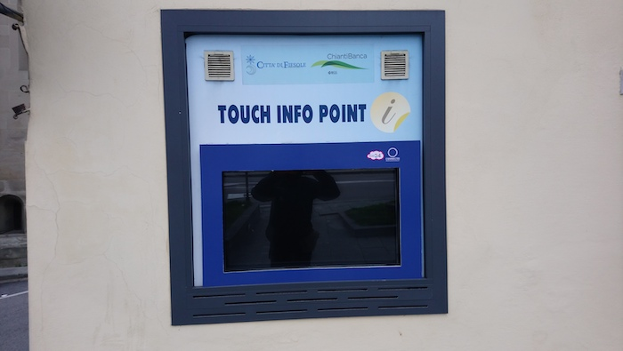
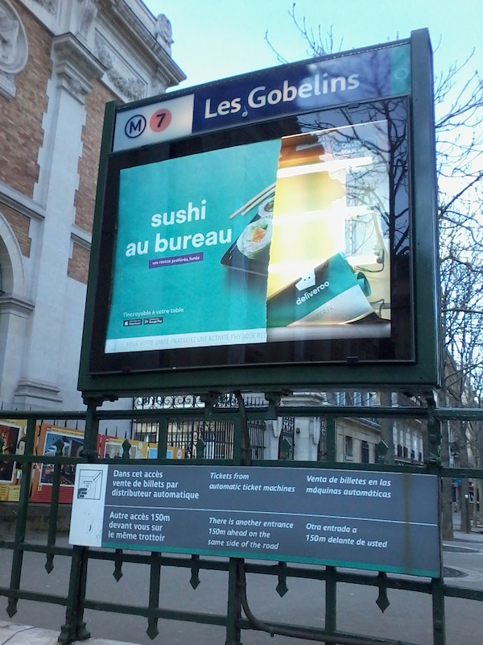

Communication in public spaces is more and more mediated by screens. This has a number of advantages: instant, remote updates (as opposed to time consuming and physical displacement involving rewrites, replacements.) This also means hi tech excesses, electricity consumption, heating up of spaces (particularly clear in hot summers), and expert workforce maintenance. And in many cases, fragility and disconcert. Error messages tell a lot about care and involvement.
Middle-tech solutions (somewhere in between hi tech and low tech) are not exempt from breakdown, and the blame will always be shared between the medium and the message.
   Many locations around the world, 2017 and 2018. Images credit: RC. Bordeaux, Mar 26, 2015. Image credit: RC.
 Fiesole, Dec 25, 2017. Image credit: RC.
 Paris, Les Gobelins, 31 March 2018. Image credit: RC.